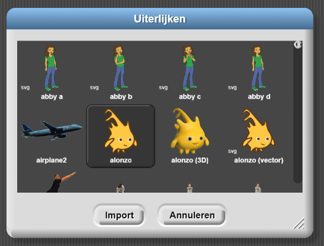

- Zorg ervoor dat je Snap! open hebt (http://snap.berkeley.edu/run) en dat je bent ingelogd.
-
Maak twee "Alonzo" uiterlijken voor je sprite. De video hieronder laat zien hoe. Onder de video staan
gedetailleerde instructies.
De volgende instructies leggen uit wat er in de video gebeurt:
-
Selecteer "Uiterlijken..." van het bestand (
 ) menu, kies "Alonzo," en klik op "Importeren"
en dan op "Annuleren."
) menu, kies "Alonzo," en klik op "Importeren"
en dan op "Annuleren."
 - Klik met de rechtermuisknop(op een Mac, ctrl+klik) op het Alonzo uiterlijk in het midden van de Uiterlijken menu (Zoals gedaan wordt in de video hierboven) en selecteer "Kopiëren."
- Klik met rechtermuisknop(of ctrl-klik) op het nieuwe uiterlijk genaamd "Alonzo(2)", en selecteer "bewerken."
- Klik op de knop "spiegelen ⟷", en klik dan op "OK."
-
Selecteer "Uiterlijken..." van het bestand (
-
Programmeer de sprite zo dat deze van uiterlijk verandert wanneer erop geklikt wordt...
- Klik op het "Scripts" tabblad onder het sprite plaatje.

-
Sleep blokken naar het midden van de Scripts werkblad, om dit Script te bouwen. Voor meer hulp,
lees het
gele blok hieronder.

Je vindt blokken in paletten met overeenkomende kleuren: paars voor Uiterlijken, geel voor Besturen, etc.
Sleep een blok onder een ander blok om ze aan elkaar te plakken. De dunne witte balk laat zien waar de blokken aan elkaar zullen plakken wanneer je de muisknop los laat.
- Klik op het "Scripts" tabblad onder het sprite plaatje.
-
Verwijder het vinkje uit het "versleepbaar" vakje onder het balkje waar je de sprite een naam kunt
geven. Dit voorkomt dat spelers per ongeluk de sprite verslepen wanneer ze erop klikken.
- Controleer je programma: klik op Alonzo op het witte vlak. Als je script werkt, zou Alonzo nu de andere kant op moeten kijken.